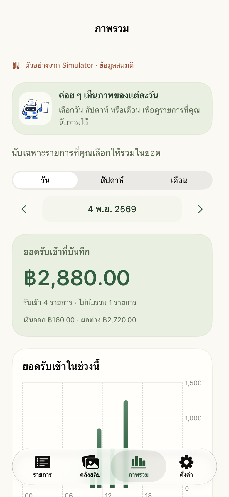
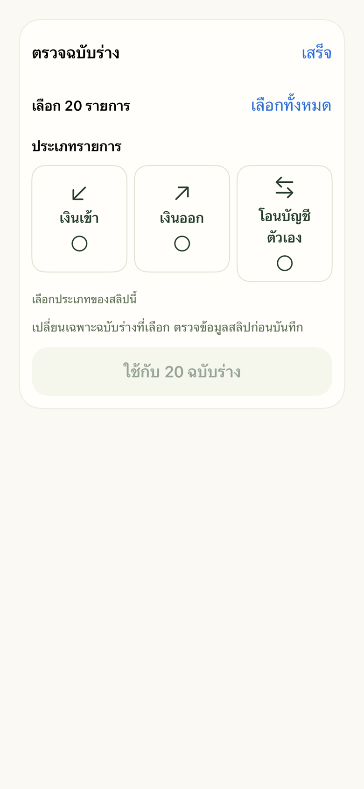
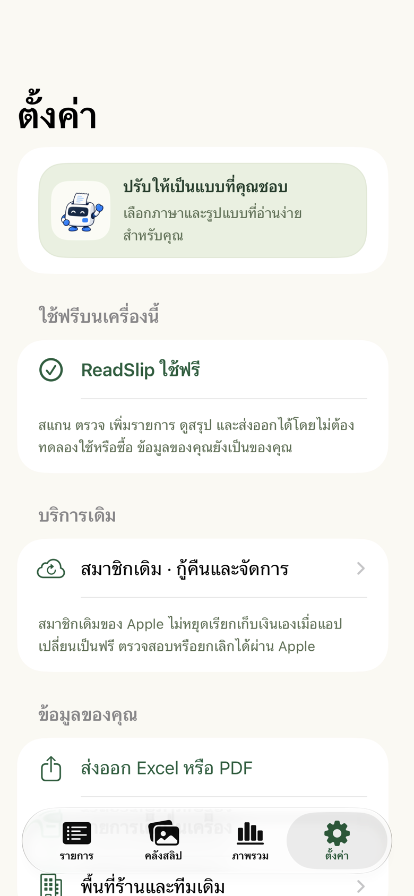

เริ่มจากรูปในเครื่อง
เลือกรูปเอง หรือสแกนคลังรูปที่อนุญาตให้เข้าถึง รวมสลิปที่บันทึกมาจากแอปอื่น ไม่จำกัดแค่รูปล่าสุด โฉมใหม่ไม่มีการถ่ายภาพในแอป
ReadSlip 1.2 พร้อมดาวน์โหลดบน App Store ภาพและรายละเอียดด้านล่างเป็นพรีวิวรุ่นพัฒนา 1.2 (9) ซึ่งอาจแตกต่างจากรุ่นที่เผยแพร่ รวมถึงการส่งออกและ ReadSlip Pro โปรดตรวจรายละเอียดปัจจุบันบน App Store ก่อนใช้งานหรือสมัครสมาชิก
พรีวิวรุ่นพัฒนา · จากคลังรูป สู่คลังสลิปของคุณ
เลือกรูปสลิปที่บันทึกไว้ใน iPhone ให้ ReadSlip ช่วยอ่าน QR และข้อความ ตรวจข้อมูล จัดเงินเข้า–เงินออก แล้วดูสรุปจากรายการที่คุณเลือกนับรวม
ใช้ฟรีทั้งสแกน สรุป และส่งออก
โฉมใหม่ไม่ต้องเริ่มทดลองใช้หรือซื้อสมาชิก
สำหรับจัดบันทึกข้อมูลจากสลิป ไม่ได้ยืนยันความแท้ของสลิปหรือการรับเงินจริงจากธนาคาร

สลิปที่เก็บไว้ มีประโยชน์ต่อได้
เลือกรูปเอง หรือสแกนคลังรูปที่อนุญาตให้เข้าถึง รวมสลิปที่บันทึกมาจากแอปอื่น ไม่จำกัดแค่รูปล่าสุด โฉมใหม่ไม่มีการถ่ายภาพในแอป
ตรวจยอด วันที่ คู่รายการ และเลขอ้างอิง แก้ข้อมูลที่อ่านไม่ชัด ระบุเงินเข้า เงินออก หรือโอนระหว่างบัญชีตัวเอง และจัดประเภทหลายรายการที่เลือกได้พร้อมกัน
ดูสรุปรายวัน รายสัปดาห์ หรือรายเดือน เลือกรายการที่จะนับรวม ค้นหาและแก้ไขย้อนหลัง แล้วส่งออก XLSX หรือ PDF ได้ฟรี
หน้าจอจากแอปจริง
ภาพจากรุ่นพัฒนา 1.2 (9) ใช้ข้อมูลสมมติทั้งหมด เป็นภาพเรนเดอร์หน้าจอ native ใน Simulator ไม่ใช่ภาพจากเครื่องผู้ใช้ แตะภาพเพื่อดูขนาดเต็ม
ตัวอย่างแถบจัดประเภทที่เลือกไว้ 20 รายการ การจัดประเภทยังไม่บันทึกข้อมูลที่ต้องตรวจให้โดยอัตโนมัติ

หน้าตั้งค่าแสดงสิทธิ์ใช้งานฟรี และแยกการกู้คืนหรือจัดการสมาชิกจากรุ่นก่อนหน้าไว้ให้

ดูเพิ่มเติม: ตัวเลือกทิศทางเงินในธีมมืดและตัวอักษรใหญ่ — ภาพทดสอบส่วนควบคุม native ขนาด 320 × 844 จุด
ข้อมูลของคุณ อยู่ในการควบคุมของคุณ
การอ่าน QR และ OCR ทำบนอุปกรณ์ รายการและสำเนาสลิปของคลังส่วนตัวเก็บในเครื่อง คุณเลือกส่งออกเองได้ แอปยังใช้ Firebase สำหรับข้อมูลการใช้งานและพื้นที่ร้านเดิม จึงควรอ่านรายละเอียดแยกตามการใช้งาน
อ่านนโยบายความเป็นส่วนตัวก่อนใช้ข้อมูลจากสลิป
QR และ OCR ช่วยจัดระเบียบข้อมูลที่อยู่ในภาพเท่านั้น ไม่ได้ตรวจสอบกับธนาคารว่าสลิปเป็นของจริงหรือธุรกรรมสำเร็จแล้ว หากใช้ประกอบการรับชำระเงิน ให้ตรวจยอดในบัญชีธนาคารด้วยเสมอ
ReadSlip for iPhone
The new design starts with your Photos library. Read QR codes and text on device, review and classify slips, see daily, weekly or monthly summaries, and export XLSX or PDF. Scanning, summaries and exports are free, with no new trial or subscription.
This site previews the tested development build 1.2 (9); the released App Store 1.2 listing describes different export and ReadSlip Pro features. Screenshots use synthetic data. Existing Apple subscriptions are managed separately and are not automatically cancelled. See subscription help.
แตะตัวผมหรือกด Enter เพื่อเปลี่ยนท่าเต้น
ดาวน์โหลดบน App Store
App Store ↗